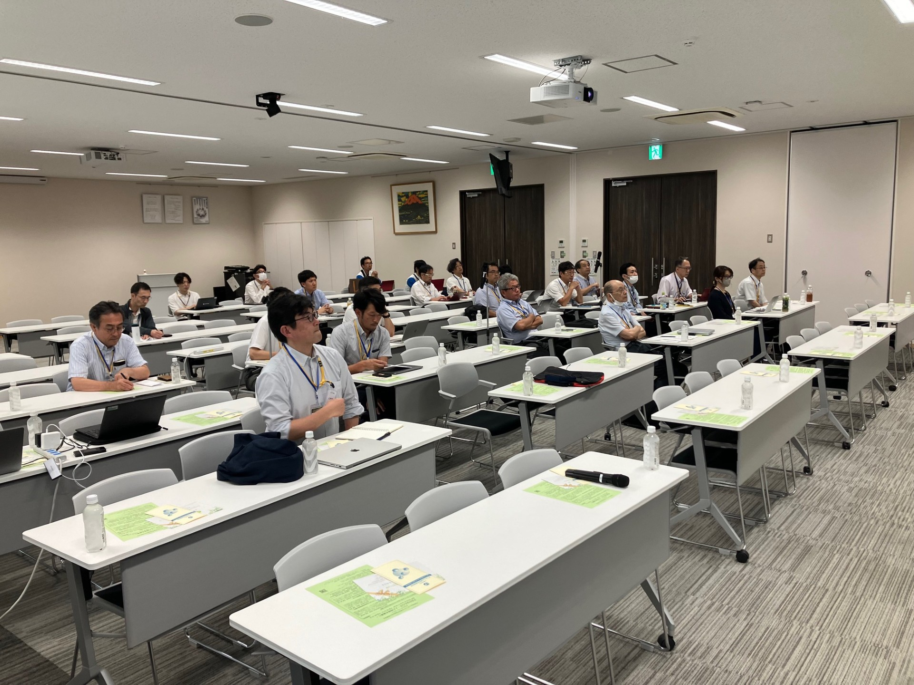
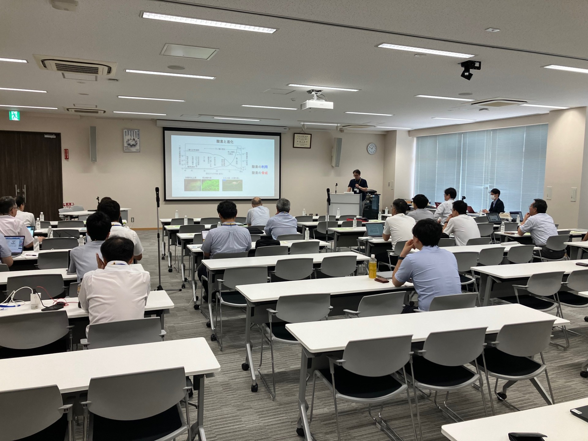
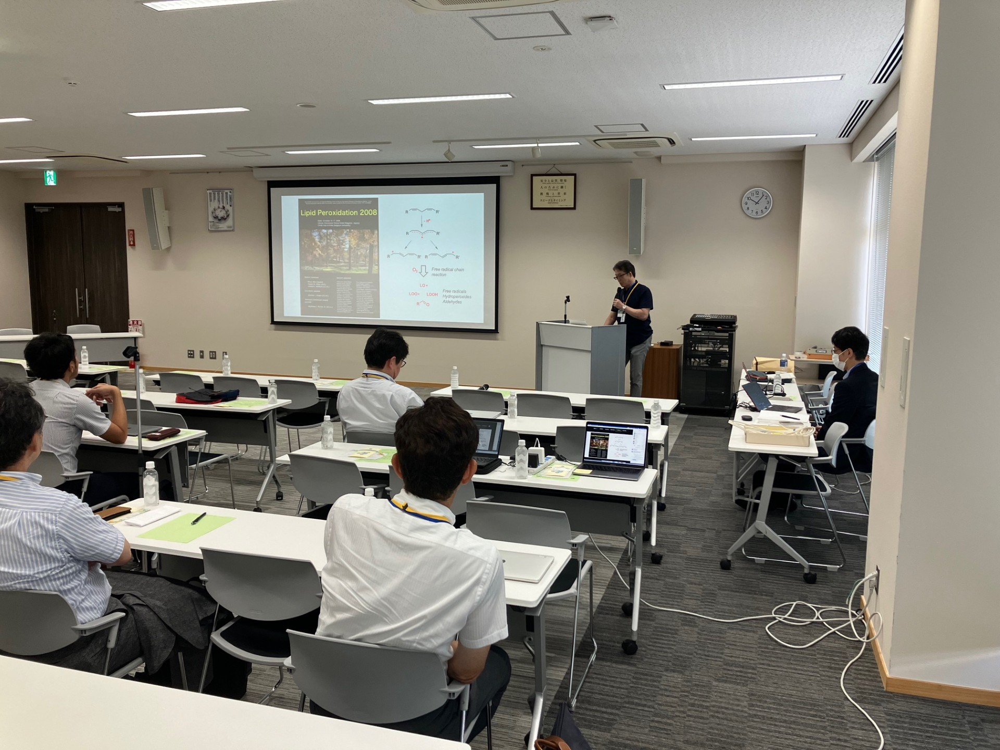
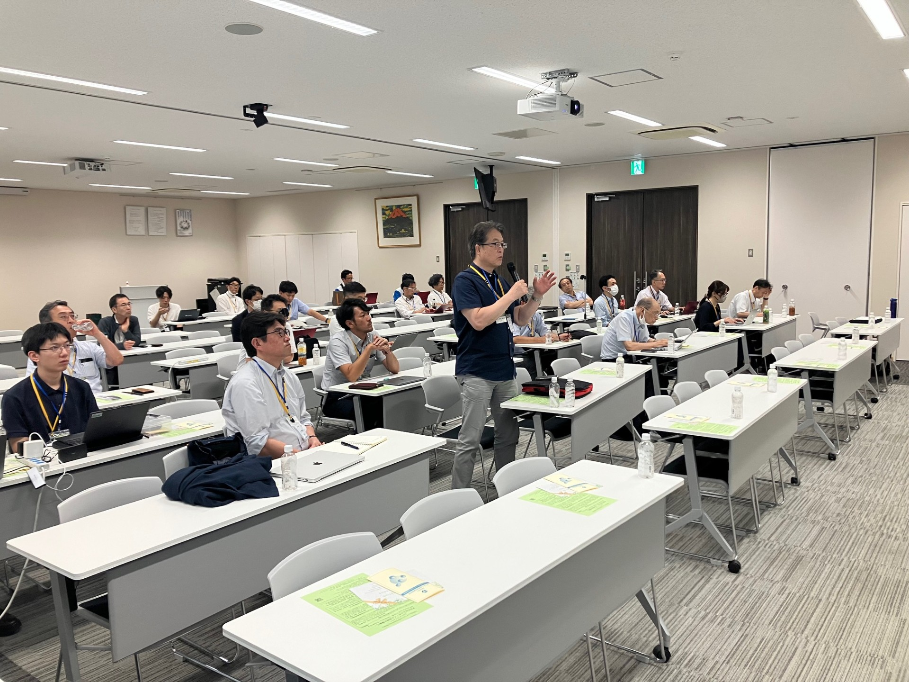
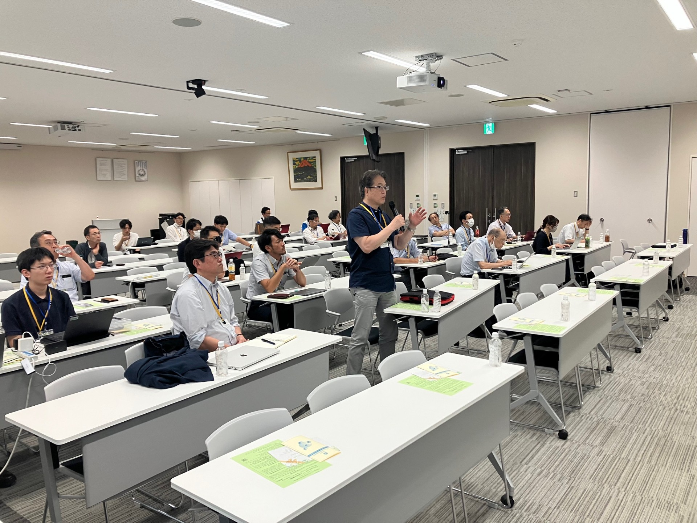

第３回 夏のシンポジウム
日 時：令和6年8月23日（金）
場 所：大阪府泉佐野市（不二製油社内）
世話人： 太田 聡（不二製油グループ本社株式会社）
プログラムはこちら
9:55-10:00
開会の挨拶
伊東 健（弘前大学 医学研究科）
10:00 – 11:00
【基調講演】
「生命が活用する脂質過酸化反応」
内田 浩二（東京大学 農学生命科学研究科）
【セッション１】
11:00 – 11:30
オンライン
「人生100年時代を生き抜く考える食事：
老化物質AGEを標的とした抗加齢医療」
山岸 昌一（昭和大学 医学部 内科学講座）
11:30 – 12:00
「ストレスが味覚と摂食行動に及ぼす影響とそのメカニズム」
中島 健一郎（名古屋大学 生命農学研究科）
12:00-13:30
昼食および不二製油による施設・研究紹介
13:30 – 14:30
【特別講演】
「医食同源から考える精密栄養学の可能性」
國澤 純（国立研究開発法人 医薬基盤・健康・栄養研究所）
【セッション２】
14:30 – 15:00
「生体と食品の脂質酸化を俯瞰的に考えてみたい」
仲川 清隆（東北大学 農学研究科）
15:00 – 15:30
「食品由来アルツハイマー病予防成分に関する研究」
甲木 孝弘（公益財団法人 東洋食品研究所）
15:30-15:45 休憩
【セッション３】
15:45 – 16:15
「バイオミメティックシステムを利用した手触りと食感のセンシング」
野々村 美宗（山形大学 理工学研究科）
16: 15 – 16:45
「酸化イミダゾールジペプチド：酸化修飾による機能性獲得」
居原 秀（大阪公立大学 理学系研究科）
16: 45 – 17:15
「カカオ・プロシアニジンによる神経依存的な線虫C. elegansの寿命延長」
井上 英史 （東京薬科大学 生命科学部）
17:15〜
閉会の挨拶
太田 聡（不二製油グループ本社株式会社）
18:00〜
意見交換会



 
